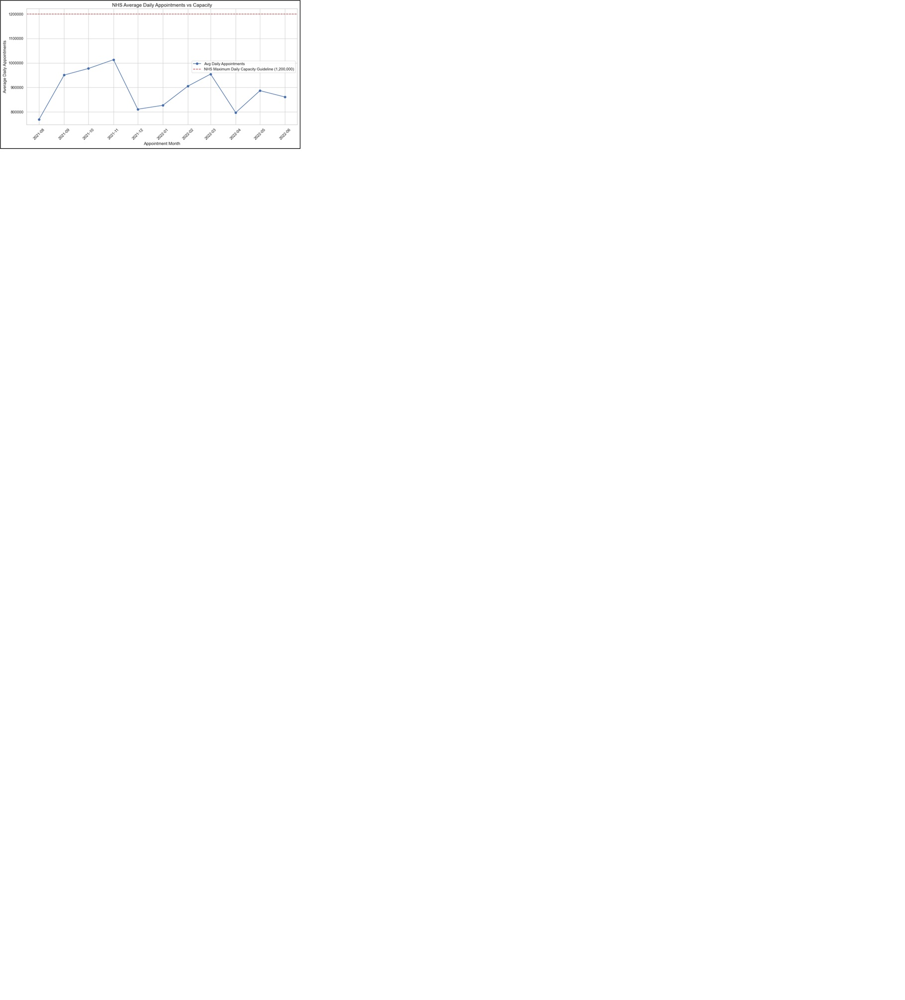
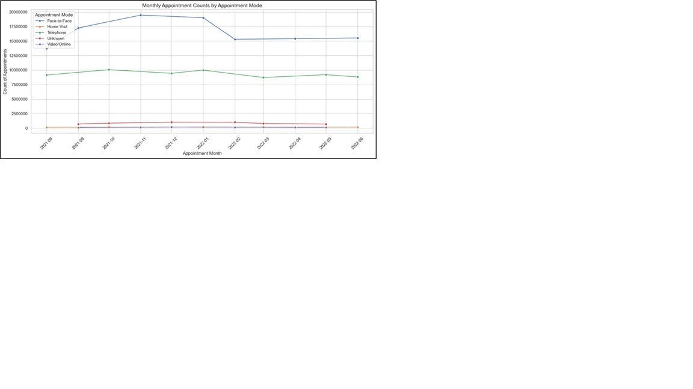
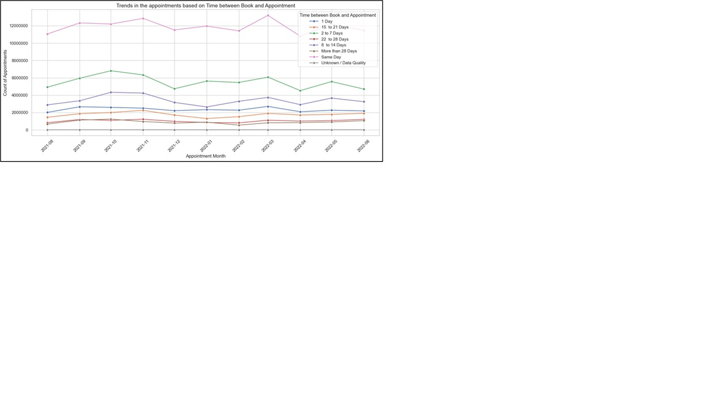
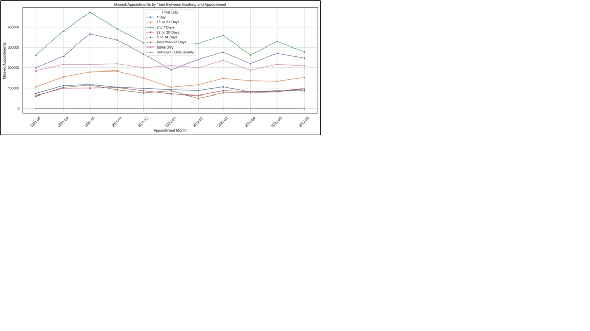
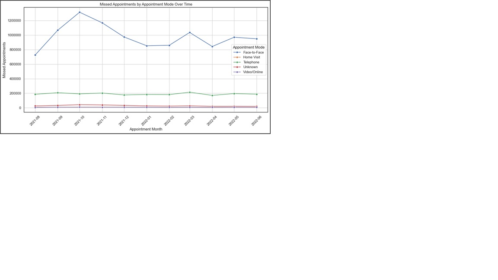
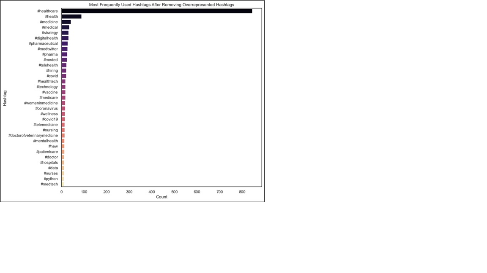
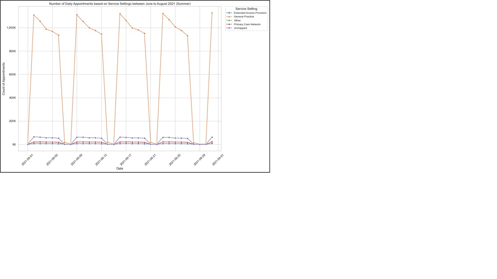

Applying Python to NHS Dataset
Overview:
As part of the LSE Data Analytics Online Career Accelerator (Course 2), I conducted an in-depth analysis of real NHS datasets to explore how the UK's healthcare system is responding to increased patient demand, digital engagement, and missed appointments. This project combined Python-based exploratory analysis, data visualisation, and public Twitter sentiment to derive actionable healthcare insights.
The analysis focused on:
- Utilisation trends across appointment types, modes, healthcare professionals and Time between Booking and Appointment
- Staff and capacity evaluation across regions
- Patient behaviour patterns, including missed appointments
- Public sentiment and trend tracking via Twitter hashtags
Based on the gathered insights, I was able to make the following recommendations:
- NHS appears to be operating within its daily appointment capacity, but service delivery could be more evenly distributed..
- Implement automated reminder systems targeting the 8 – 14 day lead-time window, where missed appointments are most common.
- Address "Unknown" and "Unmapped" entries in appointment data to improve data quality. Train staff in accurate data collection to improve data quality.
- Leverage high-performing Twitter themes and hashtags for public campaigns — e.g., use #Healthcare and #DigitalHealth to raise awareness and gather feedback.
- Expand and promote alternative modes like video consultations to ease in-person demand.
- Strengthen holiday coverage and flexible access strategies for dips in activity (December, April).
Approach:
For this project Python was used for Data wrangling, Scraping and Visualisation (Pandas, Matplotlib, Seaborn, Beautiful Soup). APIs and webscraping were also used.
To answer the NHS's questions, I used Python with Pandas, Seaborn, and Matplotlib to clean, analyse, and visualise four datasets: actual_duration.csv, appointments_regional.csv, national_categories.xlsx, and tweets.csv. Key steps included:
Key Insights:
Appointment volume peaked in October 2021 and March 2022, aligning with seasonal health pressures (e.g., flu season). Despite high appointment volumes, average daily utilisation remained within the NHS guideline of 1.2 million per day, indicating that the NHS has adequate capacity at the national level.
General Practice dominates appointment volumes, especially in winter months. GPs and Other Practice Staff share the bulk of the workload.

Face-to-face appointments dominated, but telephone consultations were also heavily used — suggesting a successful hybrid model. Home visits and video consultations remained low but stable, pointing to potential underuse or limited applicability.

Most appointments are booked same-day or within a week, highlighting the need for short-notice availability.

Missed appointments "Did Not Attend" (DNAs) are highest for bookings made 8–14 days in advance — these may benefit most from targeted reminders.

Appointment mode affects attendance: Face-to-face appointments have the highest DNA (Did Not Attend) rate, while home visits and phone consultations see better follow-through.

Top Twitter hashtags included #Healthcare, #MedTwitter, and #DigitalHealth — showing strong engagement around innovation, education, and systemic critiques.

General Practice consistently recorded the highest number of appointments across all months and quarters. Care-related encounters were the dominant context type, especially under national categories like General Consultation Acute and Routine. The top five locations based on record counts were found to be in and around London.

For a complete picture, feel free to look at my report and complete Python code in the Jupyter Notebook on GitHub.